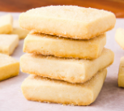

Buttery Shortbread Cookies
With only a few ingredients, these butter shortbread cookies are so simple to prepare. —Pattie Prescott

Ingredients
- 1 cup unsalted butter, softened
- 1/2 cup sugar
- 2 cups all-purpose flour
- Confectioners' sugar, optional
Instructions
- Preheat oven to 325 F.
- Cream butter and sugar until light and fluffy. Gradually beat in flour.
- Press dough into an ungreased 9-in. square baking pan. Prick with a fork.
- Bake until light brown, 30-35 minutes
- Cut into squares while warm. Cool completely on a wire rack.
- If desired, dust with confectioners' sugar.
From tasteofhome.com